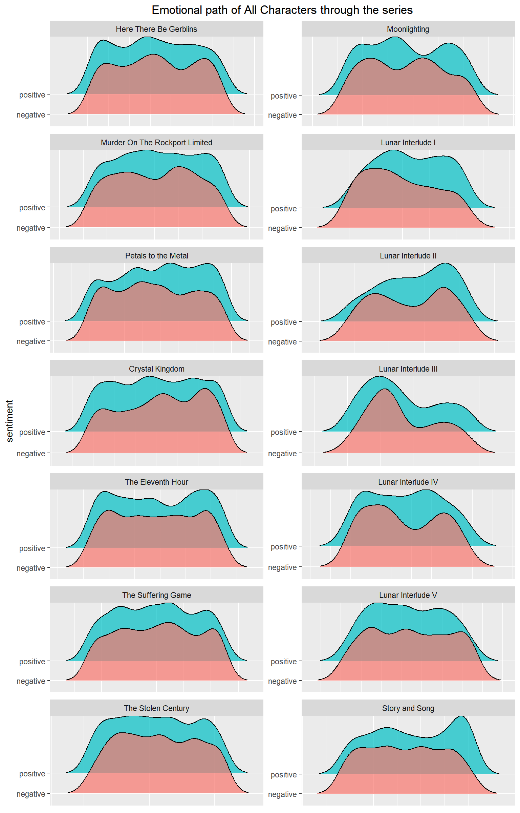

Sentiment Analysis is the science of looking at text and trying to make conclusions from measuring those words within the text. This is accomplished by using ‘lexicons’, word dictionaries that assign words emotions, or a score based on those emotions.
A simple example is putting words into positive, negative, and neutral categories, and looking at how frequently each of those words appear over the course of the text.
The Adventure Zone (TAZ) is a comedy podcast where the McElroy family play Dungeons and Dragons (DnD) together. It started as a fun one-off experience for them, but turned into a 69 episode emotional story that they told together.
The goal of this project is to apply the ideas of sentiment analysis to the text of the podcast and look for any interesting conclusions along the way
I want to look at how the emotion of the podcast changed overtime as the story became more serious, and to see how much I can measure that light-hearted factor of it. To use sentiment analysis to see what emotions were most prevalent in particular story arcs, episodes, characters, etc.
Podcasts are an audio medium, but more and more there has been a push to have text versions posted online so that hard of hearing or deaf people can follow along with the conversation. This is sometimes released by those who make the podcast, but in the case of TAZ, a group of dedicated fans trascribed every word of the podcast.
This is sourced at: http://tazscripts.tumblr.com/tazscripts
I wrote an R script to go to this url, move through the html and extract every link to each episode
### Reading in transcript ----
transcript_url <- 'http://tazscripts.tumblr.com/tazscripts'
t_html = read_html(transcript_url)
# Get a character vector of all the urls on the page
site_txt <- t_html %>%
html_nodes('a') %>%
html_attr('href')
# Only the pertinent urls
site_txt <- site_txt[12:length(site_txt)]
# Store as Dataframe
t_df <- as.tibble(site_txt)
## Labeled each individual story arc on my own
# Each of the urls within t_df / b_arc are redirection urls. This means we can't run
# read_html on them correctly, this mutate uses getURL from RCurl in order to get
# a character vector that stores the redirected URL and then uses a combination of
# str_extract and regex to get the actual URL and then store it within the tibble
# using mutate
redirect_url_extract_regex <- '(?:https[-[:alnum:]:_\\/.]+)'
b_arc <- b_arc %>%
mutate(value = getURL(value, .opts=curlOptions(followlocation=TRUE))) %>%
mutate(value = str_extract(value, redirect_url_extract_regex))
end_ep <- 69
list_of_urls <- b_arc$value[1:end_ep]
# Creating an empty dataframe to be filled
# Everything is a character defaultly, and I will manually change everything after the
# master is built, to save processing and time
master_df <- data.frame(
raw = character(),
section = character(),
arc = character(),
ep_num = character(),
part_num = character(),
stringsAsFactors=FALSE)After getting all the links organized and figuring out the structure of the html for these pages, I wrote a function to get the raw data from the html and then put it all into one dataframe
# Converts HTML as plain text to a single column dataframe
# Stored as a character vector
HTMLToTibble <- function(html) {
# Convert html to lines of text
site_txt <- html %>%
html_nodes('p') %>%
html_text()
# Convert text to df (tibble)
df <- as.tibble(site_txt)
# Convert from factors to character
df[] <- lapply(df, as.character)
# Drop empty text rows / rows with spaces
df <- df[nchar(df$value) > 3,]
#Change 'value' to 'raw', as in 'raw text data'
colnames(df) <- 'raw'
return(df)
}
# Loops through the url list and builds the master dataframe of information
for (i in 1:end_ep) {
# Wait 5 seconds before getting the next url request
Sys.sleep(5)
# Gets the tibble information from the url
tib <- HTMLToTibble(read_html(list_of_urls[i]))
# Label the raw information w/ episode information
tib <- LabelEpisode(tib, b_arc$section[i], b_arc$arc[i],
b_arc$ep_num[i], b_arc$part_num[i])
# Add tabelled tibble to master dataframe
master_df <- master_df %>%
full_join(tib)
}## Observations: 57,320
## Variables: 5
## $ raw <chr> "The Adventure ZoneDungeon Master & NPCs: Griffin McE...
## $ section <chr> "Balance Arc", "Balance Arc", "Balance Arc", "Balance...
## $ arc <chr> "Here There Be Gerblins", "Here There Be Gerblins", "...
## $ ep_num <chr> "1", "1", "1", "1", "1", "1", "1", "1", "1", "1", "1"...
## $ part_num <chr> "1", "1", "1", "1", "1", "1", "1", "1", "1", "1", "1"...We have all the data!
But, it’s not organized in the best of ways. Every line spoken is mixed with the character / person who spoke it. Ideally I’d like to have the speaker for each line in a column, and the line they speak in a separate column.
# Splits a single column dataframe into 'speaker' and 'line' based on ':'
# Any line without a colon is stored completely in 'line', speaker is NA
# Deals with whitespace and extraneous blank lines
SplitOnColon <- function(df) {
# Drop any rows that contain no letters or numbers
df <- df %>%
filter(!grepl('![[:alnum:]]', raw))
temp <- df
# Instantiate temporary storing column
temp['temp'] <- ''
# Takes all values without a : in the column, put it in a new column
temp[!grepl(':', temp$raw),] <- temp[!grepl(':', temp$raw),] %>%
mutate(temp = raw,
raw = "")
# Locations of colon
# 1 is start, 2 is end
colon_locations <- str_locate(temp$raw, ':')
# Gets all the substrings from the raw from before the colon
before_colon <- str_sub(temp$raw, start = 1, end = colon_locations[,1] - 1)
word_count <- sapply(strsplit(before_colon, " "), length)
letter_count <- unlist(lapply(before_colon, nchar))
temp$raw <- str_trim(temp$raw, side = 'both')
# All the possible ways a line will NOT have a valid speaker
fail_conditions <-
(word_count == 1 & letter_count < 3) |
(word_count == 3 &
# 3 words and no '&' or 'and'
( !grepl('(&)|(and)', before_colon))) |
(letter_count > 20) |
(grepl('\\[', before_colon)) |
(grepl('Episode', before_colon)) |
(grepl('http', before_colon)) |
(grepl('Sponsor', before_colon))
# Any line that fails give no speaker
temp[ (fail_conditions %in% T),] <- temp[ (fail_conditions %in% T),] %>%
mutate(temp = raw,
raw = "")
# Separates into columns of 'speaker' and 'line, based on :
temp <- separate(temp, col = 'raw',sep = ':', into = c('speaker', 'line'), fill = 'left',
extra = 'merge')
# Combine columns
temp$line <- paste(temp$line, temp$temp)
# Drop templine
temp <- temp[, c('speaker', 'line')]
# Trim Whitespace from both sides for both columns
temp$speaker <- str_trim(temp$speaker, side = 'both')
temp$line <- str_trim(temp$line, side = 'both')
# Replace speaker NA's with ''
temp$speaker[is.na(temp$speaker)] <- ''
# Combine
df <- bind_cols(df, temp)
# Drop raw line
df <- df %>%
select(-raw)
# Drop completely blank lines
df <- df %>%
filter(nchar(line) != 0)
# Drop lines with a {
df <- df %>%
filter(!grepl('\\{', speaker))
return(df)
}The above function handles the vast majority of all possible options of the data, amazing!
But, because these transcripts were created by a community of fans following a general style guide, there were a few inconsistencies an algorithm can’t find easily. I went through the data myself and looked for these errors and fixed them by hand
## # A tibble: 6 x 6
## section arc ep_num part_num speaker line
## <chr> <chr> <int> <int> <chr> <chr>
## 1 Balance ~ Here There~ 1 1 "" The Adventure ZoneDungeon~
## 2 Balance ~ Here There~ 1 1 "" Episode 1: Here There Be ~
## 3 Balance ~ Here There~ 1 1 Griffin Hey everybody, this is Gr~
## 4 Balance ~ Here There~ 1 1 Griffin So that is the plan, we a~
## 5 Balance ~ Here There~ 1 1 Announ~ Strap on your fantasy sea~
## 6 Balance ~ Here There~ 1 1 "" [Theme music: “Déjà Vu” b~Much better! Now that we have a much more organized dataset, we can begin the first steps of sentiment analysis
When working with sentiment analysis, we are analyzing the words and the order the words are spoken in. This means we have to separate each of the words spoken from each of the lines but still keep everything labeled and organized.
Thankfully tidytext exists to make this easy for us with the unnest_tokens() function
# Assign line numbers
df <- df %>%
mutate(line_number = 1:nrow(df),
# Number of words in the line
line_wc = sapply(strsplit(line, " "), length))
# unnest_tokens here separates all the words from their lines and keeps their
# individual line number, speaker, part number, ep number, arc, and section intact
tidy_df <- df %>%
group_by(section, arc, ep_num, part_num, speaker) %>%
unnest_tokens(word, line) %>%
ungroup()Now we have an organized dataframe with each of the words separated from the lines but still correctly labeled. This is the form our data has to be in for sentiment analysis.
## # A tibble: 6 x 8
## section arc ep_num part_num speaker line_number line_wc word
## <chr> <chr> <int> <int> <chr> <int> <int> <chr>
## 1 Balance ~ Here There~ 1 1 Griffin 3 116 hey
## 2 Balance ~ Here There~ 1 1 Griffin 3 116 every~
## 3 Balance ~ Here There~ 1 1 Griffin 3 116 this
## 4 Balance ~ Here There~ 1 1 Griffin 3 116 is
## 5 Balance ~ Here There~ 1 1 Griffin 3 116 griff~
## 6 Balance ~ Here There~ 1 1 Griffin 3 116 mcelr~Almost to graphs!
When it comes to sentiment analysis, it can be useuful to have a list of words that you don’t want to analyze. These can be filler words by someone that you don’t want assigned an emotion or words that shouldn’t be analyzed for a different reason.
Because this analysis is over a DnD podcast, there are DnD-specific words that come up that shouldn’t be analyzed
ban_words <- c('like', 'damage', 'magic', 'attack', 'magical', 'disadvantage',
'advantage', 'dungeon', 'dungeons', 'arcane', 'arcana', 'pan')So for our analysis we have to join our tidy data with different sentiment lexicons in order to visualize them. There are three common ones, listed below. Click on one to see more information about it
The Bing sentiment lexicon is the simplest one. It puts words into three simple categories:
And that’s it!
Because we have separated our data into individual words, getting the data for visualization is very simple
The Afinn Sentiment Lexicon is similar to Bing. It puts words into two categories:
But it does this on a scale from -5 to 5, rating the word based on it’s emotional severity from very negative to very positive
The NRC Sentiment Lexicon is the most nuanced of the three. It puts words into these emotional categories:
A word can be assigned more than one emotion.
We made it! All the necessary work is done and now we can have some fun!
Each different sentiment lexicon can be used for different visualizations, so click on whatever tab you’re interested in seeing
There’s a lot we can do when it comes to positive / negative words. The simplest being just looking at the most popular positive, negative and neutral words from a given speaker
These are the top 10 most popular words per category
Top words Overall
Even just looking at this basic breakdown of positive / negative words in the podcast, we already get the sense that positivity is much more popularity than negativity. The most popular negative sentiment word has a smaller count than the top 6 positive words.
Let’s continue looking to see if this trend continues.
We can also look at how the general tone of a character is maintained over the course of the podcast, by looking at how often they use positive and negative words
Here are the 4 hosts of the podcast
Character Arc Emotions
That positive trend continues with our hosts! But because DnD is a roleplaying game, there are characters that people play, here are the main character’s sentiment breakdown
Character Arc Emotions
The trend continues even with the characters they play!
We can work with joy plots, also called ridgeline plots. These are density curves of a particular sentiment overtime. These density curves are split by story arc.
Because Bing and Afinn are similar sentiment lexicons, it’s possible to make graphs using the two of them together. These ridgeline plots utilize both Bing and Afinn, to both categorize the emotion and the strength of the emotion.

When the two density curves have the same highs and the same lows, it implies more a neutral tone happening during that arc, or at the very least, an equal amount of positive and negative sentiment within a small time frame.
For the most part I’ve looked at individual speakers or just included everyone within the podcast, but for this next graph, I wanted to look at the 5 most popular NPCs per story arc and to look at their positive / negative impact on the story.
Top 5 NPCs per arc
The positive trend continues for the most part even with the NPCs!
What about if we just looked at each individual episode of the podcast? How would the score from each episode compare to one another?
Each vertical line / color of the bar designates the different story arcs of the podcast.
Episode Scores
Looking episode by episode, there is only one that is negative overall, and not even by that much compared to everything else.
Let’s look more on an individual arc basis and try and track the total positive / negative sentiment. We can do this on a lot of different scales, but I chose to get a total sentiment by every 10 lines of Dialogue.
That is, looking at 10 lines of Dialogue, getting the total positive / negative score and then that becomes a bar in the chart. Longer arcs have thinner bars and shorter arcs have thicker bars.
Closer look at arc scores
The closer look at the total positive / negative sentiment score helps show that there are negative times in the story, but overall the positive times win nearly everytime.
I think it goes to show just how much fun it can be to listen to, and on how high of a note it ended on!
It can be fun to do ridgeline plots with NRC, as there are a lot more emotions to look at instead of just positive and negative
NRC Ridgelines
Looking at how emotions changed over the course of the podcast, using all characters, it can be hard to tell the high points and the low points. There are definitely spikes of different emotions, but let’s get more specific
NRC Ridgelines
By just focusing on a single arc, the emotional path of the characters seems a lot more clear.
What if we focus on the emotional path of just a single character in an arc?
NRC Ridgelines
By focusing on just a single character in a single arc, we get a sense of their emotions over the course of that contained story.
Sankey diagrams are a specific type of flow diagram, with the width of the arrows being proportional to the flow quantity.
We can use these types of graphs with words, specifically with phrases, to be able to see how popular some word flows are.
An example of that is a catch-phrase of one of the characters Magnus, is ‘Magnus rushes in’. I was curious how popular this phrase was for him, so I found all the patterns of sentences that fit the structure:
# Regex pattern for 'Magnus word word'
pattern <- '(Magnus)\\s(\\w+)\\s(\\w+)'
# Get only those exact matches from lines
s_df <- str_extract(df$line, pattern)
# Get rid of all NAs ans store as dataframe
s_df <- s_df[!is.na(s_df)]
s_df <- as.tibble(as.data.frame(s_df))
# Separate each of those words into columns
s_df <- separate(s_df, col = 's_df', into = c('word1', 'word2', 'word3'), sep = ' ')
# Delete a few problem rows
s_df <- s_df[-c(307, 208, 59, 26),]I did some editing of this dataframe on my own as it was a bit too large to be readable otherwise
# Load edited dataset
s_df <- read.csv('s_df.csv', stringsAsFactors = F)
# Sankey Diagrams require data to be stored in this structure:
# Source | Target | Value
# This means restructuring our data a little bit
stv <- s_df %>%
group_by(word1, word2) %>%
tally
names(stv) <- c('source', 'target', 'value')
stv2 <- s_df %>%
group_by(word2, word3) %>%
tally
names(stv2) <- c('source', 'target', 'value')
stv <- stv %>%
full_join(stv2)
# Sankey Daigrams require two dataframes, a node and a link. Basically a list of key
# words taht will identify the blocks, that's the node (u_sankey) and a list of connections,
# (links) that have a unique number identifier and a count value associated with them
u_sankey <- unique(c(unique(s_df$word1), unique(s_df$word2), unique(s_df$word3)))
u_sankey <- as.tibble(as.data.frame(u_sankey))
names(u_sankey) <- 'name'
links <- data.frame(source = match(stv$source, u_sankey$name) - 1,
target = match(stv$target, u_sankey$name) - 1,
value = stv$value)
# Use the networkD3 library to plot this sankey diagram
library(networkD3)
sankeyNetwork(Links = links, Nodes = u_sankey, Source = "source",
Target = "target", Value = "value",
fontSize = 12, nodeWidth = 20)Magnus _____ _____
The networkD3 library allows us to create a Sankey Diagram where we can hover over any connection in the dataset and see how popular that connection is. Out of all the three word phrases that the character Magnus has, ‘Magnus rushes in’ is one of the strongest, as we can tell by the size of each of the rectangular nodes
Another few phrases stuck out to me that I wanted to look at. The name of the podcast itself, ‘The Adventure Zone’, and a particular spell that was cast many a time, ‘Zone of Truth’. I thought it’d be fun to take a look at all these together
The Adventure Zone of Truth
And there we have it! A fun sankey diagram looking at a few different phrases from the podcast.
While working on this project, I created a few interactive visualiations that were showcased in thise notebook via Tableau.
Here is the link if you want to play with some of the visualizations